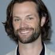

Sam Winchester

Samuel William[1] "Sam" Winchester (b. May 2, 1983) was a hunter as well as a Man of Letters, along with his older brother Dean. He is one of the main protagonists of Supernatural. Both Sam and Dean are related to the Winchester and Campbell families - a Letters family and a Hunting family respectively. The pair also shares a bloodline with Cain and Abel. Because of this, Sam was predestined to be the true vessel of the fallen archangel Lucifer (whilst Dean was Michael's). Sam is friends with angel Castiel, Prophet Kevin Tran, the demon Meg and former lover-turned-enemy of demon Ruby. He is also the occasional reluctant ally of demon Crowley and for a time was forced to be an unknowing and unwilling vessel for the angel Gadreel (before expelling him).